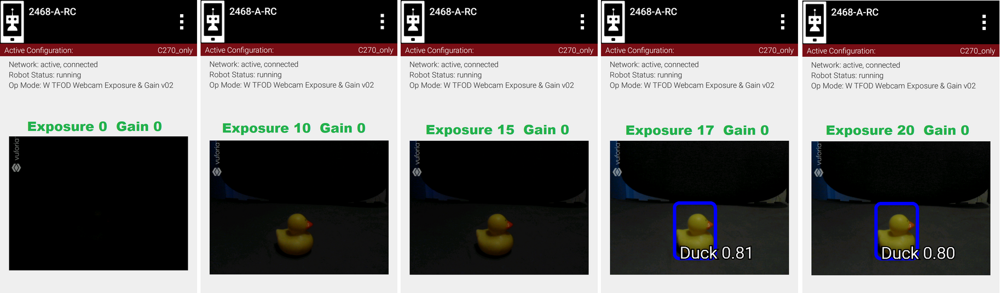
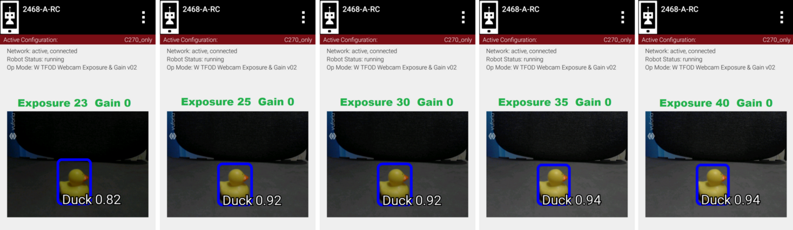
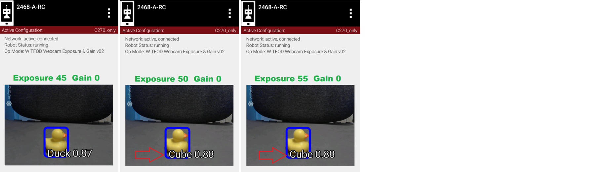

Example 1: Exposure’s effect on recognition
We interrupt this tutorial to demonstrate the two webcam interfaces described so far: ExposureControl and GainControl.
Note
These measurements were taken with the TensorFlow Object Detection (TFOD) processor and the Freight Frenzy game elements. TFOD was removed from the SDK in 2024, so you cannot reproduce this experiment as written. The pattern it shows is the point, and it applies just as well to today’s VisionPortal processors: recognition quality rises with exposure or gain, peaks over a fairly narrow band, then falls off sharply.
The question these examples were built to answer: can the exposure and/or gain controls improve the chance of a fast, accurate detection?
Another way to frame this effort is: can these controls simulate the lighting conditions the processor performs best under? Namely, if the competition field has different lighting that affects recognition, can you get back to the performance you tuned for at home?
We first try exposure alone. Setting gain to zero, we recognize the webcam images at various exposure values.

Gain 0, Exp 0 -> 20

Gain 0, Exp 23 - > 40

Gain 0, Exp 45 -> 55
Five fresh readings were taken at each exposure setting. Namely the test OpMode was opened (INIT) each time for a fresh initialization and webcam image processing.
This chart shows recognition confidence levels; ‘instant’ is defined here as recognition within 1 second.

Five readings at each exposure level
Higher exposure does improve recognition, then performance suddenly drops. Then at higher levels, the processor begins to “see” the wrong object entirely. Not good!
So, there does seem to be a range of exposure values that gives better results. Note the sharp drop-off at both ends of the range: below 25 and above 40. In engineering, a robust solution can withstand variation. Using a value in the middle of the improved range, can reduce the effects of unforeseen variation. But this range varies with ambient lighting conditions, which may be quite different at the tournament venue.
This data is the result of a very particular combination of: webcam model (Logitech C270), distance (12 inches), lookdown angle (30 degrees), recognition model, ambient lighting, background, etc. Your results will vary, perhaps significantly.